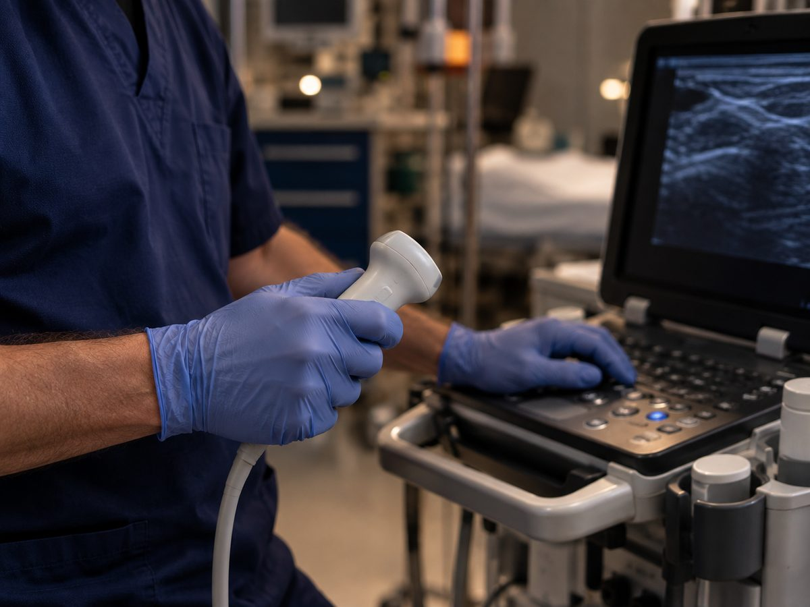
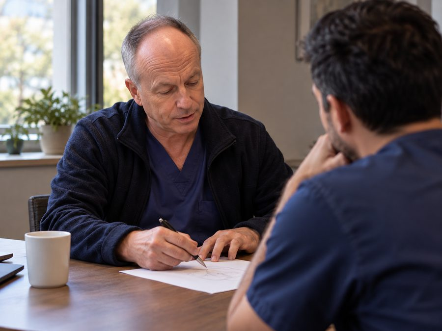
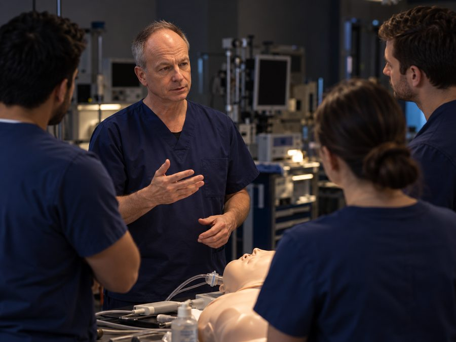
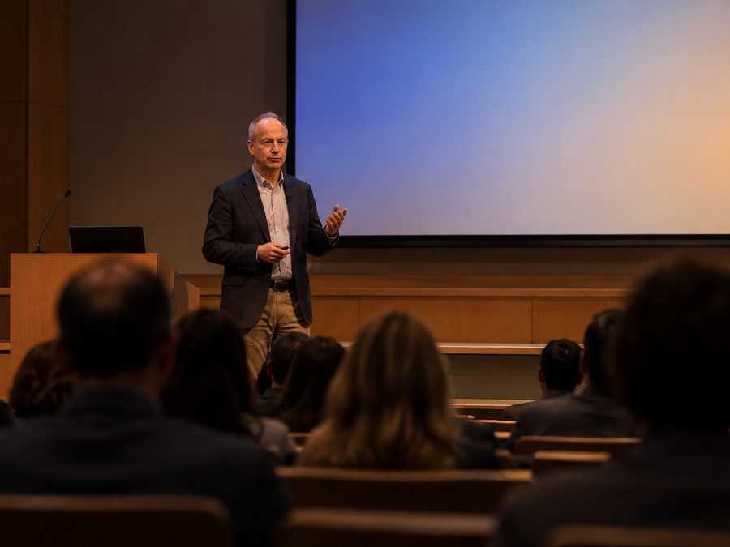

Complex regional pain syndrome
One of the conditions named in his practice, alongside other pain that does not resolve on the usual timetable.
Anesthesiology and pain medicine · Columbia, Missouri
Triple board certified in anesthesiology and pain medicine, and named a Castle Connolly Top Doctor for the fifth consecutive year.
What he treatsPractice
His clinical range covers adult and pediatric anesthesiology, regional anesthesia and chronic pain management. The approach he describes is a holistic management of suffering, emotional as well as physical.
One of the conditions named in his practice, alongside other pain that does not resolve on the usual timetable.
Pain arising from the nervous system itself, where the cause and the sensation are often far apart.
Children living with long term pain, an area that sits between his two board certifications.
The period where clear expectations and good regional technique decide how much of the pain is preventable.

Ultrasound guided technique is part of the daily work: placing the block that decides whether a patient wakes comfortable or wakes in trouble.
He holds a faculty appointment as Assistant Professor of Anesthesiology, so the work includes the people learning it.
“I’m proud to have been nominated by my peers as a Castle Connolly Top Doctor. But this recognition reflects the team behind the care.”
Adam C. Booser, MD, on the 2026 listing
Training
A training path through three of the hospitals that shaped modern anesthesiology, then a fellowship in the pediatric side of it.
At NewYork-Presbyterian Hospital, Memorial Sloan-Kettering and the Hospital for Special Surgery.
University of Colorado School of Medicine, Children’s Hospital Colorado.
In anesthesiology, and in pediatric anesthesiology.
University of Missouri Hospital, Columbia.
The company
He is founder and chief executive of True Medical Solutions, Inc., a health technology company that writes physician-authored guidance for patients facing surgery.
“For more than twenty years in operating rooms and pain clinics, I’ve seen how often suffering is preventable, when patients are given clear education, realistic expectations, and the right questions to ask.”
Gallery



The images on this site are AI-generated illustrations, made with Dr. Booser’s approval, of the kinds of settings his work happens in. They are not photographs of specific patients, colleagues or events.
Contact
For teaching, speaking and professional enquiries.
A direct contact route is being set up and will appear here shortly.